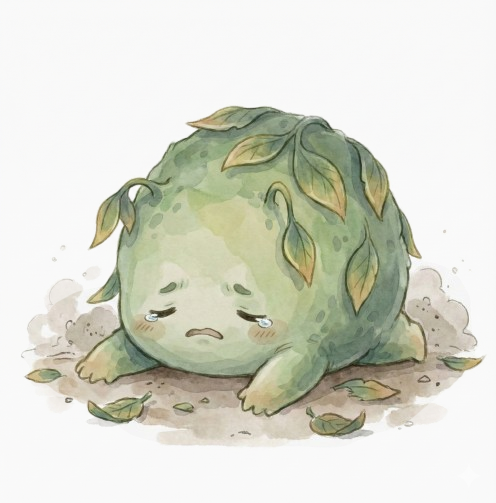

<div class="screen">
    
    <!-- Header -->
    <div class="header">
        <button class="back-btn" id="focusBackBtn">
            <i class="fas fa-chevron-left"></i>
        </button>
        <div class="page-title">1792 茶園</div>
    </div>

    <!-- 計時器顯示 (修改為 HH:MM:SS 格式) -->
    <div class="timer-section">
        <div class="timer-text">
            <!-- 這裡改用單一 ID 控制，方便顯示時:分:秒 -->
            <div class="timer-val" id="timerDisplay" style="font-size: 40px;">00 : 00 : 00</div>
        </div>
        <div class="timer-dot"></div>
    </div>

    <!-- 主視覺區域 (影片 + 氣泡) -->
    <div class="main-visual" style="overflow: visible;"> <!-- 允許氣泡凸出 -->
        
        <!-- [新增] 對話氣泡 -->
        <div id="focusSpeechBubble" class="speech-bubble">
            茶葉正在努力轉化中...
        </div>

        <!-- 影片播放區 -->
        <!-- 增加 cursor: pointer 提示可點擊 -->
        <video id="focusVideo" class="main-img" autoplay loop muted playsinline style="cursor: pointer;">
            <source src="" type="video/mp4">
            您的瀏覽器不支援影片播放。
        </video>

        <!-- 浮動米色方格 (專注清單) -->
        <div class="checklist-box">
            <div class="checklist-title">專注清單</div>
            <!-- JS 會動態填入項目 -->
        </div>
    </div>

    <!-- === 確定中斷 浮動視窗 (Modal) === -->
    <div class="modal-overlay" id="abortModal">
        <div class="modal-card">
            <div class="warn-title">確定要返回主畫面嗎？</div>
            <div class="warn-desc">將失去茶櫃中隨機一個已收集的茶種</div>
            
            

            <div class="btn-group">
                <button class="btn-base btn-abort" id="confirmAbortBtn">確認中斷</button>
                <button class="btn-base btn-return" id="returnFocusBtn">取消，返回專注</button>
            </div>
        </div>
    </div>

</div>